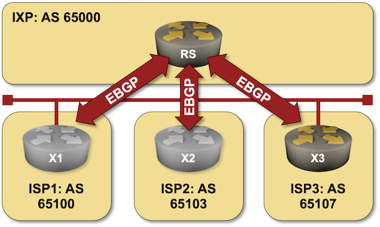

BGP Route Server in an Internet Exchange Point
Internet Exchange Points (IXPs) provide a layer-2 network shared between participating Internet Service Providers (ISPs). While IP forwarding and BGP peering remain under the control of the ISPs, many IXPs offer a route server functionality – participants can peer with a shared BGP daemon that distributes the participants’ BGP prefixes without modifying the AS path or BGP next hops.

In this lab exercise, you’ll implement a BGP route server on a small Internet Exchange Point.
Existing BGP Configuration
The routers in your lab use the following BGP AS numbers. Each ISP router advertises an IPv4 prefix.
| Node/ASN | Router ID | Advertised prefixes |
|---|---|---|
| AS65000 | ||
| rs | 10.0.0.1 | |
| AS65100 | ||
| isp1 | 192.168.100.1 | 192.168.100.0/24 |
| AS65103 | ||
| isp2 | 192.168.103.1 | 192.168.103.0/24 |
| AS65107 | ||
| isp3 | 192.168.107.1 | 192.168.107.0/24 |
The routers have these EBGP sessions. netlab configures them automatically; if you’re using another lab infrastructure, you’ll have to configure your devices manually.
| Node | Router ID / Neighbor |
Router AS/ Neighbor AS |
Neighbor IPv4 |
|---|---|---|---|
| isp1 | 192.168.100.1 | 65100 | |
| rs | 65000 | 172.16.42.1 | |
| isp2 | 192.168.103.1 | 65103 | |
| rs | 65000 | 172.16.42.1 | |
| isp3 | 192.168.107.1 | 65107 | |
| rs | 65000 | 172.16.42.1 | |
| rs | 10.0.0.1 | 65000 | |
| isp1 | 65100 | 172.16.42.2 | |
| isp2 | 65103 | 172.16.42.3 | |
| isp3 | 65107 | 172.16.42.4 |
Start the Lab
Assuming you already set up your lab infrastructure:
- Change directory to
session/5-routeserver - Execute
netlab up(device requirements, other options). - Log into your devices with
netlab connectand verify their IP addresses and EBGP sessions.
Tip
If the device you want to work with does not support the BGP Route Server functionality, use Cumulus Linux as the route server. Start the lab with netlab up -s nodes.rs.device=cumulus and configure the route server with netlab config route_server -l rs.
The Problem
Log into ISP1 and check its BGP table. The routes from AS 65103 and 65107 are in the BGP table, but while the next hops point to ISP2 and ISP3, the AS path contains AS 65000 (IXP AS number):
$ netlab connect isp1 --show ip bgp
Connecting to clab-rs-isp1 using SSH port 22, executing show ip bgp
BGP routing table information for VRF default
Router identifier 10.0.1.1, local AS number 65100
Route status codes: s - suppressed contributor, * - valid, > - active, E - ECMP head, e - ECMP
S - Stale, c - Contributing to ECMP, b - backup, L - labeled-unicast
% - Pending best path selection
Origin codes: i - IGP, e - EGP, ? - incomplete
RPKI Origin Validation codes: V - valid, I - invalid, U - unknown
AS Path Attributes: Or-ID - Originator ID, C-LST - Cluster List, LL Nexthop - Link Local Nexthop
Network Next Hop Metric AIGP LocPref Weight Path
* > 192.168.100.0/24 - - - - 0 i
* > 192.168.103.0/24 172.16.42.3 0 - 100 0 65000 65103 i
* > 192.168.107.0/24 172.16.42.4 0 - 100 0 65000 65107 i
We would like to hide the fact that the routes (but not traffic) pass through AS 65000, and a BGP route server (defined in RFC 7947) is exactly what we need.
Configuration Tasks
Configuring BGP route server clients is easy (assuming your device supports the BGP route server functionality) and usually takes a single command similar to neighbor route-server-client configured either in the BGP routing process or within an address family:
- On RS, configure ISP1, ISP2, and ISP3 as route server clients.
After configuring the route server clients, the route server sends EBGP updates without its AS number in the AS path. Most BGP implementations reject such updates as the first AS number in the AS path should be the neighbor’s AS number. You have to turn off that check with a command similar to no neighbor enforce-first-as:
- On ISP1, turn off the first AS check on the EBGP session with RS (it’s already turned off on ISP2 and ISP3).
Warning
After configuring RS and ISP1, you might have to resend the EBGP updates from RS. Use a command similar to clear ip bgp * soft or clear ip bgp *.
Verification
You can use the netlab validate command if you’ve installed netlab release 1.8.3 or later and use Arista EOS, Cumulus Linux, or FRR on ISP2 and ISP3. The validation tests check:
- The state of the EBGP session between RS and ISP1/ISP2.
- Whether RS propagates routing updates from ISP1 to ISP2/ISP3.
- Whether the EBGP updates from RS contain the unmodified AS path.
- Whether ISP1 accepts EBGP updates from RS (we have to use a ping command to check that).
For example, this is the result you’d get if you ran the validation test before performing the configuration tasks:

If the netlab validate command fails or you’re using another network operating system on the ISP routers, check the state of the BGP table on ISP1. It should contain prefixes advertised by ISP2/ISP3 without AS 65000 in the AS path:
$ netlab connect isp1 --show ip bgp
Connecting to clab-rs-isp1 using SSH port 22, executing show ip bgp
BGP routing table information for VRF default
Router identifier 10.0.1.1, local AS number 65100
Route status codes: s - suppressed contributor, * - valid, > - active, E - ECMP head, e - ECMP
S - Stale, c - Contributing to ECMP, b - backup, L - labeled-unicast
% - Pending best path selection
Origin codes: i - IGP, e - EGP, ? - incomplete
RPKI Origin Validation codes: V - valid, I - invalid, U - unknown
AS Path Attributes: Or-ID - Originator ID, C-LST - Cluster List, LL Nexthop - Link Local Nexthop
Network Next Hop Metric AIGP LocPref Weight Path
* > 192.168.100.0/24 - - - - 0 i
* > 192.168.103.0/24 172.16.42.3 0 - 100 0 65103 i
* > 192.168.107.0/24 172.16.42.4 0 - 100 0 65107 i
Reference Information
Device Requirements
- Use any device supported by the netlab BGP configuration module for ISP1 and RS routers.
- Use Arista EOS, Cumulus Linux, or FRR for ISP2 and ISP3.
- You can do automated lab validation with Arista, Cumulus Linux, or FRR running on ISP2 and ISP3. Automated lab validation requires netlab release 1.8.3 or higher.
- Git repository contains Cumulus Linux initial device configurations for RS, ISP2, and ISP3.
Lab Wiring
| Origin Device | Origin Port | Link Name (NET) | Description |
|---|---|---|---|
| isp1 | Ethernet1 | rs_1 | IXP LAN |
| isp2 | swp1 | rs_1 | IXP LAN |
| isp3 | swp1 | rs_1 | IXP LAN |
| rs | Ethernet1 | rs_1 | IXP LAN |
Lab Addressing
| Node/Interface | IPv4 Address | IPv6 Address | Description |
|---|---|---|---|
| isp1 | 192.168.100.1/24 | Loopback | |
| Ethernet1 | 172.16.42.2/24 | IXP LAN | |
| isp2 | 192.168.103.1/24 | Loopback | |
| swp1 | 172.16.42.3/24 | IXP LAN | |
| isp3 | 192.168.107.1/24 | Loopback | |
| swp1 | 172.16.42.4/24 | IXP LAN | |
| rs | 10.0.0.1/32 | Loopback | |
| Ethernet1 | 172.16.42.1/24 | IXP LAN |